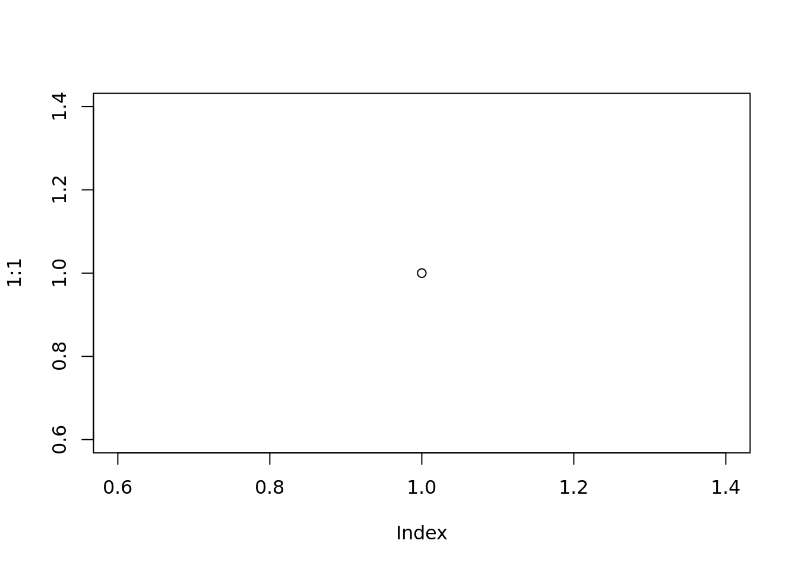

1 + 1[1] 2Quarto enables you to weave together content and executable code into a finished document. To learn more about Quarto see https://quarto.org.
When you click the Render button a document will be generated that includes both content and the output of embedded code. You can embed code like this:
1 + 1[1] 2You can add options to executable code like this
[1] 4The echo: false option disables the printing of code (only output is displayed).
plot(1:1)
library(plotly)Loading required package: ggplot2
Attaching package: 'plotly'The following object is masked from 'package:ggplot2':
last_plotThe following object is masked from 'package:stats':
filterThe following object is masked from 'package:graphics':
layoutdata <- read.csv("https://raw.githubusercontent.com/plotly/datasets/master/school_earnings.csv")
fig <- plot_ly(data, x = ~Women, y = ~Men, text = ~School, type = 'scatter', mode = 'markers',
marker = list(size = ~Gap, opacity = 0.5))
fig <- fig %>% layout(title = 'Gender Gap in Earnings per University',
xaxis = list(showgrid = FALSE),
yaxis = list(showgrid = FALSE))
fig